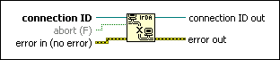
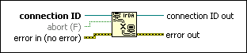

IrDA Close Connection Function
Owning Palette: IrDA Functions
Requires: Base Development System (Windows)
Closes the open infrared connection to the IrDA device specified by connection ID.

 Add to the block diagram Add to the block diagram |
 Find on the palette Find on the palette |
Owning Palette: IrDA Functions
Requires: Base Development System (Windows)
Closes the open infrared connection to the IrDA device specified by connection ID.

| Add to the block diagram |
Find on the palette |
 |
connection ID is an IrDA connection refnum that uniquely identifies the IrDA connection. |
 |
abort is reserved for future use. |
 |
error in describes error conditions that occur before this node runs. With the following exception, this input provides standard error in functionality.
This node runs normally even if an error occurred before this node runs. |
 |
connection ID out has the same value as connection ID. Do not wire this output to other IrDA functions. |
 |
error out contains error information. This output provides standard error out functionality. |
Refer to the following VIs for examples of using the IrDA Close Connection function:
 Open example Find related examples
Open example Find related examples
Open example Find related examples